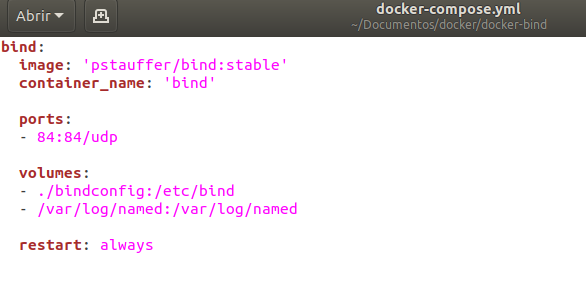
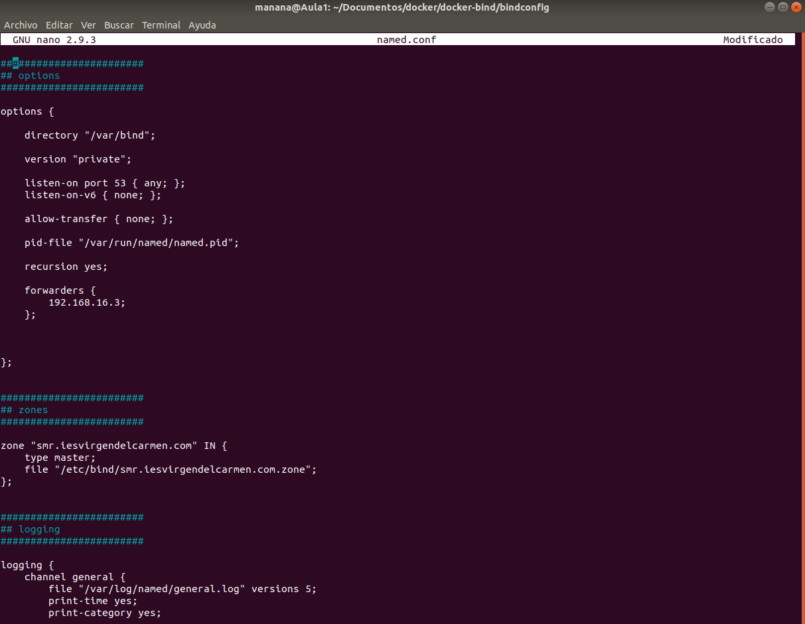

Para instalar docker ponemos en la terminal sudo apt install docker.io docker-compose, y pasará a instalarse.
Creamos la carpeta donde se va a guardar la configuración, después de crearla accederemos a ella.
Luego ponemos el comando git clone https://github.com/pstauffer/docker-bind/ una vez puesto este comando accederemos cd docker-bind y una vez dentro de ese directorio pondremos docker-compose -f docker-compose.yml up -d

Al hacer el comando docker-compose -f docker-compose.yml up saldrá un error por que el puerto 53 ya está ocupado entonces, lo que hacemos es ir al fichero docker-compose.yml y donde pone 53:53 ponemos 84:84 y ya funcionará
Luego ponemos docker start bind para iniciarlo, para ver si funciona ponemos docker ps y luego para ver errores ponemos el comando docker exec -i -t [CONTAINER_ID] /bin/cat /var/log/named/general.log
Donde pone container_id es el numero señalado en la imagen.
Luego ponemos el comando docker exec -i -t 686d62e2bd7c bin/sh para ejecutar un terminal dentro del contenedor 686d62e2bd7c es la ID de mi contenedor.
 Nos vamos al fichero de configuración named.conf y ahí ponemos lo siguiente para configurarlo con el instituto, donde pone forwarders ponemos 192.168.16.3 que es la red de cisco y en zone ponemos smr.iesvirgerdelcarmen.com y en file donde pone etc/bind/example… ponemos etc/bind/smr.iesvirgendelcarmen.com.zone y guardamos
Ahora como arriba hemos indicado que la zone es smr.iesvirgendelcarmen.com.zone pues ponemos
nano smr.iesvirgendelcarmen.com.zone y ahi dentro ponemos la configuración de la imagen.
Probamos la configuración
Para ver si la configuración está bien lo que hacemos es docker stop bind y luego ponemos docker-compose -f docker-compose.yml up -d